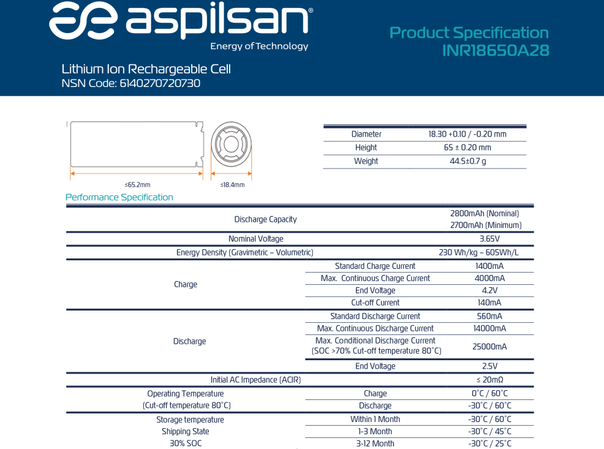
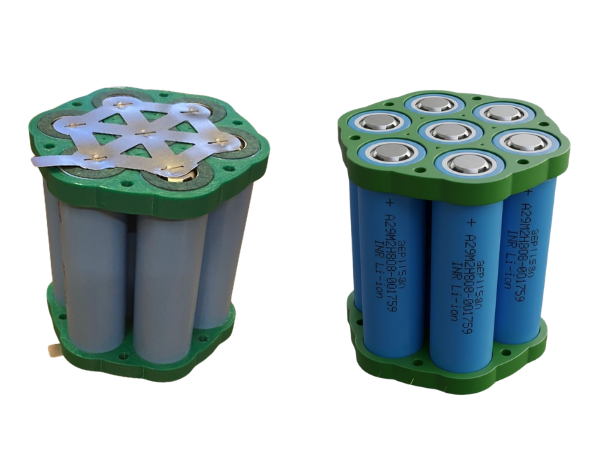
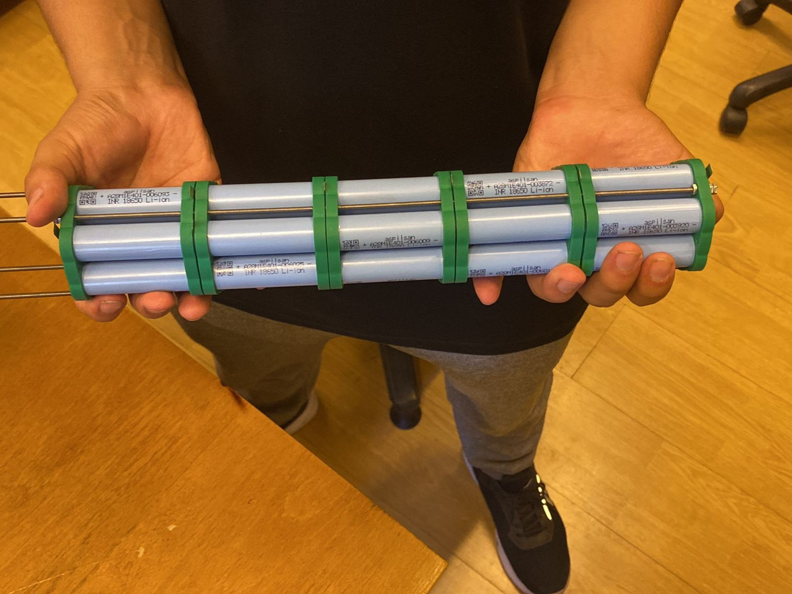
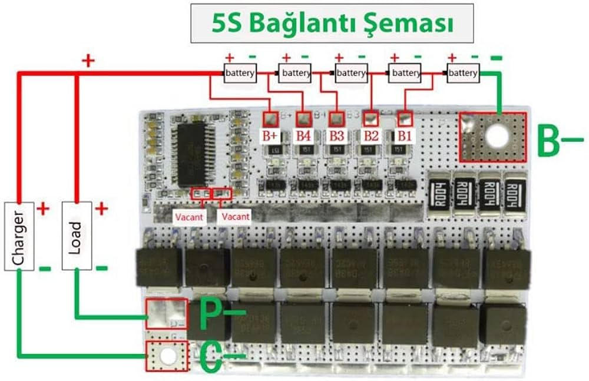
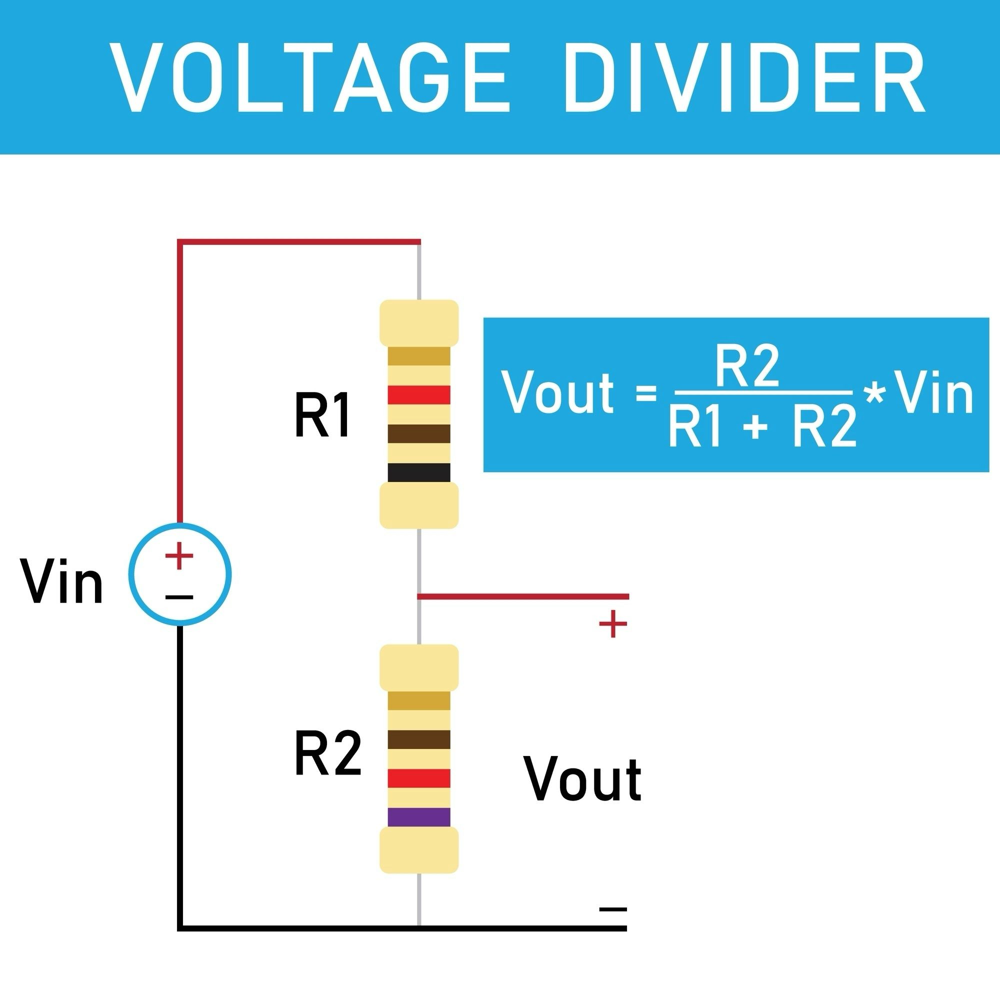
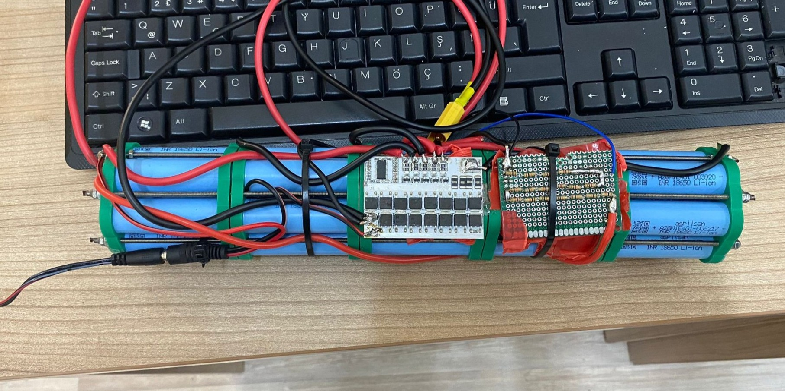

İnsansız su altı araçlarında (ROV) yüksek enerji yoğunluğu ve güvenilir güç aktarımı hayati önem taşır. Bu yazıda, kendi ihtiyacımıza yönelik Lityum-İyon hücreleri kullanarak oluşturduğumuz batarya paketinin üretimini, hücre dengeleme süreçlerini ve şarj durumu okuma algoritmalarını adım adım inceliyoruz.
Hücre Seçimi
Projelerimizde yerli üretim olan ASPİLSAN INR18650A28 pillerini tercih ettik. Bu hücreler hem anlık akım deşarj kapasiteleri (C-rate) hem de stabil gerilim eğrileri ile sistem gereksinimlerimizi karşılamaktadır.
ASPİLSAN Hücre Özelliklerini İnceleyin →

Hücre Dizilimi ve Tutucu (Holder) Tasarımı
Motorlarımızın ve jetson tabanlı bilgisayarımızın toplam güç tüketimine göre 5S7P (5 Seri, 7 Paralel) konfigürasyonunu belirledik. Bu yapı bize yaklaşık 18.5V nominal gerilim ve ~19.6Ah kapasite sunmaktadır.
Paketleme işleminde hücrelerin birbirine temas edip kısa devre oluşturmaması ve hava sirkülasyonunun sağlanması için özel tutucular (holder) kullandık. Hücreler 7'şerli paralel bloklar halinde üst üste dizilerek uygun nikel şeritler ile punta makinesi kullanılarak birleştirildi.
Holder 3D Tasarım Dosyaları (Drive)
Önce her bir gruptaki 7 hücre paralel olarak puntalanır, daha sonra bu bloklar kendi aralarında seri olarak (5S) bağlanarak istenen voltaja ulaşılır.

BMS Entegrasyonu ve Güvenli Şarj Devresi
Hücre gruplarını mekanik olarak birleştirmek yeterli değildir. Şarj/deşarj sırasında bazı hücrelerin fazla ısınıp zarar görmesini engellemek, hücreleri dengelemek (cell balancing) ve kısa devre koruması sağlamak için BMS (Battery Management System) bağlamak zorunludur.

BMS devresi şemaya uygun şekilde, doğru sıralama (B-, B1, B2...) ile bağlandıktan sonra, şarj hattı oluşturulur. Sistemimizi güvenle şarj edebilmek için BMS'in C- (Charge) veya P- pinleri kullanılarak harici bir dişi jack modülü eklenir. Şarj işlemi için 21V ve minimum 2A gücünde spesifik bir lityum adaptörü kullanılmalıdır.
Voltaj Bölücü (Voltage Divider) ile SoC Ölçümü
Tam şarjlı 5S bataryamız yaklaşık 21V gerilim verir. Mikrodenetleyicilerimizin (Arduino) analog giriş pinleri (ADC) bu kadar yüksek bir voltajı okuyamaz (maksimum 3.3V veya 5V okuyabilirler). Bu gerilimi mikrodenetleyicinin okuyabileceği seviyeye düşürmek için delikli pertinaks üzerinde bir Voltaj Bölücü (Voltage Divider) devresi hazırladık.

Hesaplamalarımıza göre bu devre için R1 direncini 100KΩ, R2 direncini ise 22KΩ olarak belirledik (bu değerlere ulaşmak için elinizdeki dirençleri seri bağlayabilirsiniz). Farklı batarya konfigürasyonlarında (3S, 4S vb.) çalışıyorsanız direnç değerlerini tekrar hesaplamalısınız.
Voltaj Bölücü Hesaplama Aracına Git →
Bu donanımsal kurulumun ardından, voltaj bölücüden okunan analog değeri yazılım tarafında bir kalibrasyon fonksiyonundan geçirerek aracın o anki Şarj Durumunu (SoC - State of Charge) gerçek zamanlı olarak takip edebiliyoruz.
Sonuç
Bu Ar-Ge sürecinin sonunda; tamamen aracımızın şasisine uygun boyutlarda, 18.5V nominal gerilim ve 19.6Ah yüksek kapasite sunan, BMS ile koruma altına alınmış el yapımı bir güç ünitesi ortaya çıkardık. Bu sistem bize hem maliyet avantajı hem de operasyonel esneklik sağlamış oldu.
